Fichas de lectura
Texto informativo en español con huecos y banco de palabras, comprensión auditiva con código QR (audio gratuito) y sopa de letras: 5 páginas con solucionario.
3.231 recursos
Materia
Grado
Por grado: 1.er grado (1.º de primaria) · 1.º de primaria · 4.º grado (4.º de primaria) · 7.º grado (1.º de ESO) · 1.º de ESO
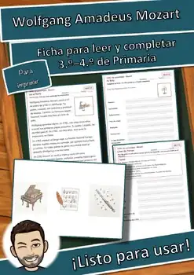
Taller de personajes: Mozart – Ficha de lectura: texto con huecos, comprensión auditiva y sopa de letras
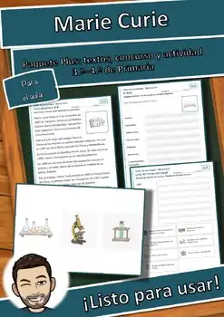
Taller de personajes: Marie Curie – Ficha de lectura: texto con huecos, comprensión auditiva y sopa de letras

Taller de tarjetas: Las mascotas – Ficha de lectura: texto con huecos, comprensión auditiva y sopa de letras

Taller de tarjetas: Las emociones – Ficha de lectura: texto con huecos, comprensión auditiva y sopa de letras
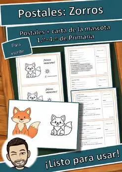
Postales de vacaciones Zorro: mascota de clase, 3 niveles | Español – Ficha de lectura: texto con huecos, comprensión auditiva y sopa de letras
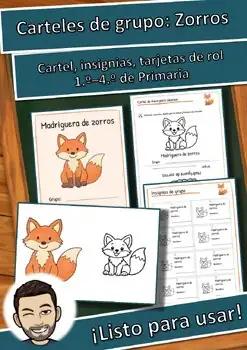
Carteles de grupo Zorro: mascota de clase y tarjetas de rol | Español – Ficha de lectura: texto con huecos, comprensión auditiva y sopa de letras
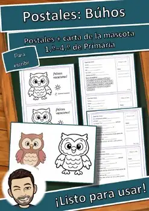
Postales de vacaciones Búho: mascota de clase, 3 niveles | Español – Ficha de lectura: texto con huecos, comprensión auditiva y sopa de letras
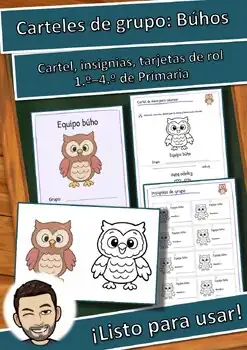
Carteles de grupo Búho: mascota de clase y tarjetas de rol | Español – Ficha de lectura: texto con huecos, comprensión auditiva y sopa de letras
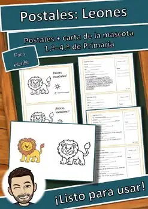
Postales de vacaciones León: mascota de clase, 3 niveles | Español – Ficha de lectura: texto con huecos, comprensión auditiva y sopa de letras
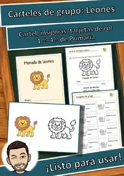
Carteles de grupo León: mascota de clase y tarjetas de rol | Español – Ficha de lectura: texto con huecos, comprensión auditiva y sopa de letras
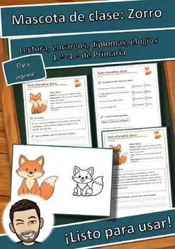
Paquete mascota de clase Zorro: texto, encargos, elogios | Español – Ficha de lectura: texto con huecos, comprensión auditiva y sopa de letras
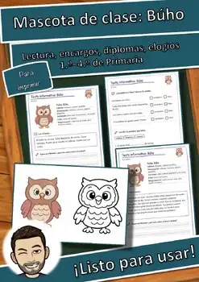
Paquete mascota de clase Búho: texto, encargos, elogios | Español – Ficha de lectura: texto con huecos, comprensión auditiva y sopa de letras
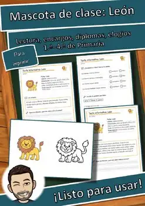
Paquete mascota de clase León: texto, encargos, elogios | Español – Ficha de lectura: texto con huecos, comprensión auditiva y sopa de letras
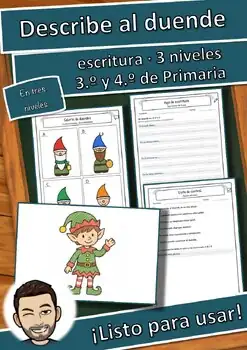
Describe al duende: escritura, banco de palabras, lista (3.º-4.º) GRATIS – Ficha de lectura: texto con huecos, comprensión auditiva y sopa de letras
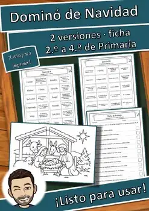
Historia de Navidad en dominó: 2 versiones, palabras clave (2.º-4.º) GRATIS – Ficha de lectura: texto con huecos, comprensión auditiva y sopa de letras

Amigo invisible de la amabilidad: 24 retos y notas secretas (1.º-4.º) GRATIS – Ficha de lectura: texto con huecos, comprensión auditiva y sopa de letras

Calendario de Adviento del aula: 24 puertas, ideas (1.º-4.º) GRATIS – Ficha de lectura: texto con huecos, comprensión auditiva y sopa de letras
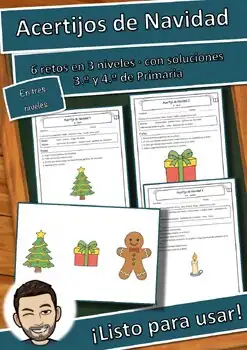
Acertijos lógicos de Navidad: 6 retos, 3 niveles (3.º-4.º) GRATIS – Ficha de lectura: texto con huecos, comprensión auditiva y sopa de letras

Acertijos lógicos de invierno: 6 retos, 3 niveles (3.º-4.º) GRATIS – Ficha de lectura: texto con huecos, comprensión auditiva y sopa de letras

Periódico – Ficha de comprensión lectora primaria: texto con huecos y sopa de letras

Muerte – Ficha de comprensión lectora primaria: texto con huecos y sopa de letras

Menstruación – Ficha de comprensión lectora primaria: texto con huecos y sopa de letras

Imperio otomano – Ficha de comprensión lectora primaria: texto con huecos y sopa de letras

Henri Rousseau – Ficha de comprensión lectora primaria: texto con huecos y sopa de letras

Comercio – Ficha de comprensión lectora primaria: texto con huecos y sopa de letras

Alaska – Ficha de comprensión lectora primaria: texto con huecos y sopa de letras

Adler – Ficha de comprensión lectora primaria: texto con huecos y sopa de letras
Bandera – Ficha de comprensión lectora primaria: texto con huecos y sopa de letras
Psicología – Ficha de comprensión lectora primaria: texto con huecos y sopa de letras
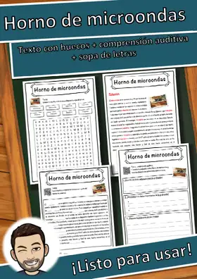
Horno de microondas – Ficha de comprensión lectora primaria: texto con huecos y sopa de letras

Enns – Ficha de comprensión lectora primaria: texto con huecos y sopa de letras

Solidaridad – Ficha de comprensión lectora primaria: texto con huecos y sopa de letras

Trojanisches Pferd – Ficha de lectura: texto con huecos, comprensión auditiva y sopa de letras

Torre de televisión de Berlín – Ficha de lectura: texto con huecos, comprensión auditiva y sopa de letras

Streik – Ficha de lectura: texto con huecos, comprensión auditiva y sopa de letras

Sozialdemokratie – Ficha de lectura: texto con huecos, comprensión auditiva y sopa de letras

Occidente – Ficha de comprensión lectora primaria: texto con huecos y sopa de letras

Chad – Ficha de comprensión lectora primaria: texto con huecos y sopa de letras
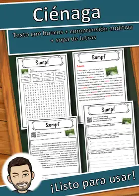
Ciénaga – Ficha de comprensión lectora primaria: texto con huecos y sopa de letras
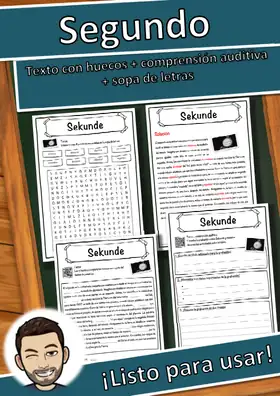
Segundo – Ficha de comprensión lectora primaria: texto con huecos y sopa de letras

Lago salado – Ficha de comprensión lectora primaria: texto con huecos y sopa de letras
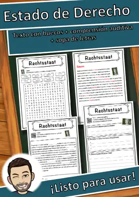
Estado de Derecho – Ficha de comprensión lectora primaria: texto con huecos y sopa de letras
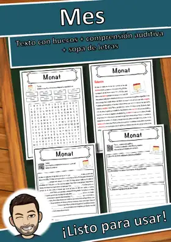
Mes – Ficha de comprensión lectora primaria: texto con huecos y sopa de letras
Georges Pierre Seurat – Ficha de comprensión lectora primaria: texto con huecos y sopa de letras
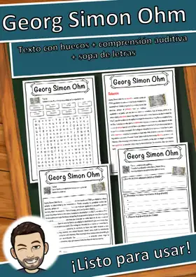
Georg Simon Ohm – Ficha de comprensión lectora primaria: texto con huecos y sopa de letras
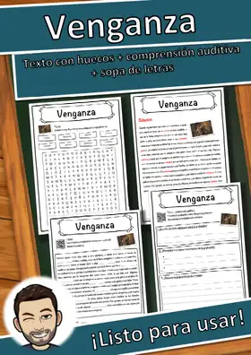
Venganza – Ficha de comprensión lectora primaria: texto con huecos y sopa de letras
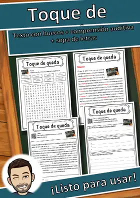
Toque de queda – Ficha de comprensión lectora primaria: texto con huecos y sopa de letras
Simón Pedro – Ficha de comprensión lectora primaria: texto con huecos y sopa de letras
No se encontraron recursos. Prueba con otra palabra o con otro filtro.